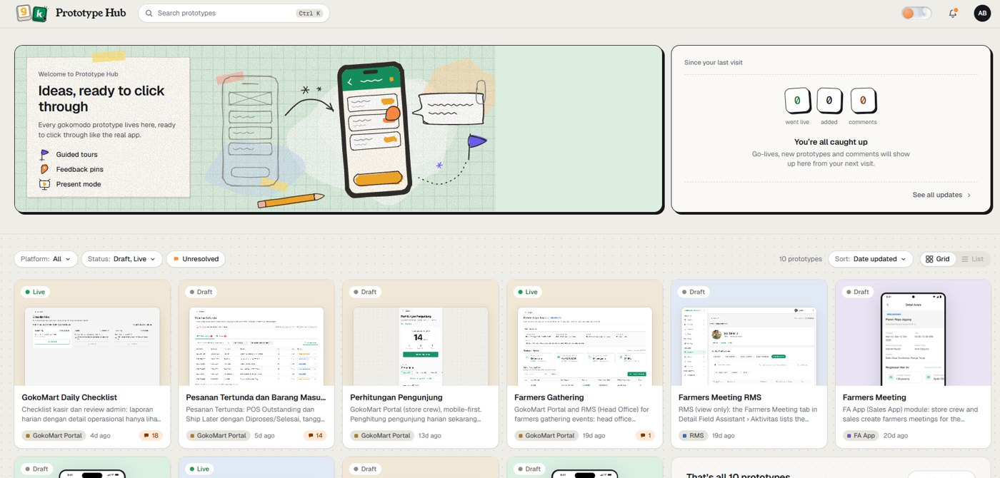
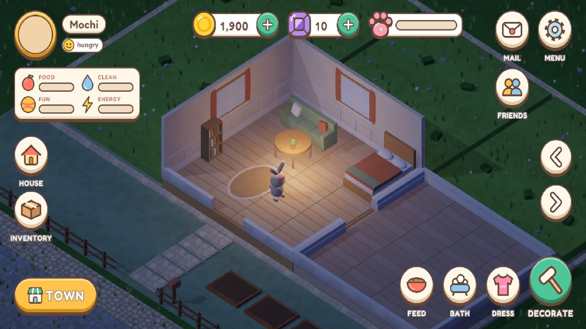

Zoom out
House / Lab / Prototype Hub
all rooms lit
Exit house
bench · prototype-hub

in use by my team
side project · design + code
Prototype Hub
When the deliverable is a coded prototype, handoff needs a home. Prototype Hub is that home: the team clicks through, drops comments, sees touch hints and follows guided flows, with every version kept.
Comments
Touch hints
Guided flows
Versioning
Present mode
Read the build notes
ALSO IN THE LAB

Cozy pet gameIn development · arcade cabinet
Conversational AILearning bit by bit · voice gadget